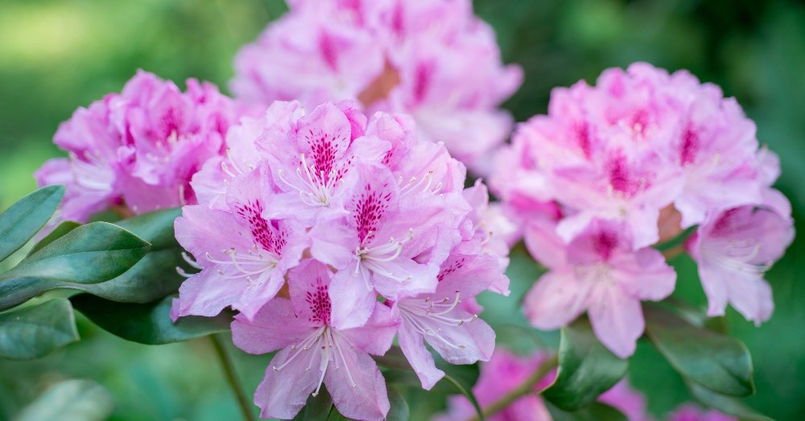

Los lirios, especialmente el Iris japonica, se utilizan en jardines japoneses por sus elegantes flores y hojas largas. Florecen en primavera y pueden agregar un toque de color y elegancia al jardín.
Hiedra Japonesa
La hiedra japonesa es una planta trepadora que puede cubrir paredes y enredaderas, proporcionando un verde denso y una textura adicional al jardín.

Rododendro
Los rododendros, incluyendo azaleas, son comunes en los jardines japoneses por sus flores brillantes y coloridas. Estos arbustos florecen en primavera y pueden proporcionar un contraste vibrante con otras plantas.